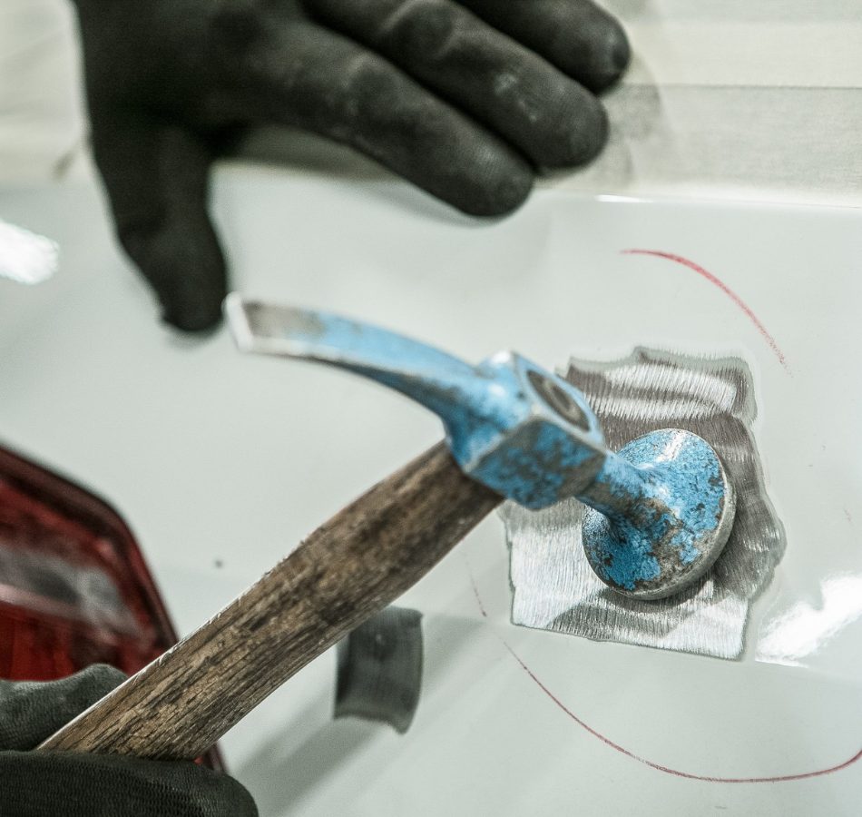

COMO AJUDAMOS
Serviço de Martelinho de Ouro Automotivo
O serviço de martelinho de ouro da Auto Lira é a solução ideal para remover amassados e pequenas deformações na lataria sem a necessidade de repintura. Essa técnica moderna e precisa devolve ao veículo seu aspecto original, preservando a pintura de fábrica e garantindo um acabamento perfeito.
Na Auto Lira, os profissionais utilizam ferramentas específicas e métodos de precisão para atuar diretamente na parte interna da chapa, restaurando a forma da peça com rapidez, qualidade e economia. O resultado é uma reparação discreta e eficiente, sem comprometer a estrutura do veículo.
O martelinho de ouro é indicado para danos leves causados por pequenas batidas, granizo ou impactos de estacionamento. Com a experiência da Auto Lira, seu carro recupera a aparência de novo, mantendo a originalidade e o valor de mercado.
